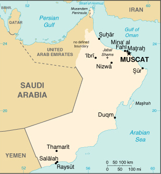

|
Oman | |
| Introduction Geography People Government Economy Communications Transportation Military Transnational Issues | ||
|  | ||
| Oman | Introduction | Top of Page |
| Background: | In 1970, QABOOS bin Said Al Said ousted his father and has ruled as sultan ever since. His extensive modernization program has opened the country to the outside world and has preserved a long-standing political and military relationship with the UK. Oman's moderate, independent foreign policy has sought to maintain good relations with all Middle Eastern countries. |
| Oman | Geography | Top of Page |
| Location: | Middle East, bordering the Arabian Sea, Gulf of Oman, and Persian Gulf, between Yemen and UAE |
| Geographic coordinates: | 21 00 N, 57 00 E |
| Map references: | Middle East |
| Area: |
total:
212,460 sq km
land: 212,460 sq km water: 0 sq km |
| Area - comparative: | slightly smaller than Kansas |
| Land boundaries: |
total:
1,374 km
border countries: Saudi Arabia 676 km, UAE 410 km, Yemen 288 km |
| Coastline: | 2,092 km |
| Maritime claims: |
contiguous zone:
24 NM
exclusive economic zone: 200 NM territorial sea: 12 NM |
| Climate: | dry desert; hot, humid along coast; hot, dry interior; strong southwest summer monsoon (May to September) in far south |
| Terrain: | central desert plain, rugged mountains in north and south |
| Elevation extremes: |
lowest point:
Arabian Sea 0 m
highest point: Jabal Shams 2,980 m |
| Natural resources: | petroleum, copper, asbestos, some marble, limestone, chromium, gypsum, natural gas |
| Land use: |
arable land:
0%
permanent crops: 0% permanent pastures: 5% forests and woodland: 0% other: 95% (1993 est.) |
| Irrigated land: | 580 sq km (1993 est.) |
| Natural hazards: | summer winds often raise large sandstorms and dust storms in interior; periodic droughts |
| Environment - current issues: | rising soil salinity; beach pollution from oil spills; very limited natural fresh water resources |
| Environment - international agreements: |
party to:
Biodiversity, Climate Change, Desertification, Hazardous Wastes, Law of the Sea, Marine Dumping, Ozone Layer Protection, Ship Pollution, Whaling
signed, but not ratified: none of the selected agreements |
| Geography - note: | strategic location on Musandam Peninsula adjacent to Strait of Hormuz, a vital transit point for world crude oil |
| Oman | People | Top of Page |
| Population: |
2,622,198
note: includes 527,078 non-nationals (July 2001 est.) |
| Age structure: |
0-14 years:
41.51% (male 554,727; female 533,627)
15-64 years: 56.12% (male 894,978; female 576,672) 65 years and over: 2.37% (male 32,863; female 29,331) (2001 est.) |
| Population growth rate: | 3.43% (2001 est.) |
| Birth rate: | 37.96 births/1,000 population (2001 est.) |
| Death rate: | 4.1 deaths/1,000 population (2001 est.) |
| Net migration rate: | 0.48 migrant(s)/1,000 population (2001 est.) |
| Sex ratio: |
at birth:
1.05 male(s)/female
under 15 years: 1.04 male(s)/female 15-64 years: 1.55 male(s)/female 65 years and over: 1.12 male(s)/female total population: 1.3 male(s)/female (2001 est.) |
| Infant mortality rate: | 22.52 deaths/1,000 live births (2001 est.) |
| Life expectancy at birth: |
total population:
72.04 years
male: 69.9 years female: 74.29 years (2001 est.) |
| Total fertility rate: | 6.04 children born/woman (2001 est.) |
| HIV/AIDS - adult prevalence rate: | 0.11% (1999 est.) |
| HIV/AIDS - people living with HIV/AIDS: | NA |
| HIV/AIDS - deaths: | NA |
| Nationality: |
noun:
Omani(s)
adjective: Omani |
| Ethnic groups: | Arab, Baluchi, South Asian (Indian, Pakistani, Sri Lankan, Bangladeshi), African |
| Religions: | Ibadhi Muslim 75%, Sunni Muslim, Shi'a Muslim, Hindu |
| Languages: | Arabic (official), English, Baluchi, Urdu, Indian dialects |
| Literacy: |
definition:
NA
total population: approaching 80% male: NA% female: NA% |
| Oman | Government | Top of Page |
| Country name: |
conventional long form:
Sultanate of Oman
conventional short form: Oman local long form: Saltanat Uman local short form: Uman former: Muscat and Oman |
| Government type: | monarchy |
| Capital: | Muscat |
| Administrative divisions: | 6 regions (mintaqat, singular - mintaqah) and 2 governorates* (muhafazat, singular - muhafazah) Ad Dakhiliyah, Al Batinah, Al Wusta, Ash Sharqiyah, Az Zahirah, Masqat, Musandam*, Zufar*; note - the US Embassy in Oman reports that Masqat is a governorate, but this has not been confirmed by the US Board of Geographic Names (BGN) |
| Independence: | 1650 (expulsion of the Portuguese) |
| National holiday: | Birthday of Sultan QABOOS, 18 November (1940) |
| Constitution: | none; note - on 6 November 1996, Sultan QABOOS issued a royal decree promulgating a new basic law which, among other things, clarifies the royal succession, provides for a prime minister, bars ministers from holding interests in companies doing business with the government, establishes a bicameral legislature, and guarantees basic civil liberties for Omani citizens |
| Legal system: | based on English common law and Islamic law; ultimate appeal to the monarch; has not accepted compulsory ICJ jurisdiction |
| Suffrage: | in Oman's most recent elections in 2000, limited to approximately 175,000 Omanis chosen by the government to vote in elections for the Majlis ash-Shura |
| Executive branch: |
chief of state:
Sultan and Prime Minister QABOOS bin Said Al Said (since 23 July 1970); note - the monarch is both the chief of state and head of government
head of government: Sultan and Prime Minister QABOOS bin Said Al Said (since 23 July 1970); note - the monarch is both the chief of state and head of government cabinet: Cabinet appointed by the monarch elections: none; the monarch is hereditary |
| Legislative branch: |
bicameral Majlis Oman consists of an upper chamber or Majlis al-Dawla (48 seats; members appointed by the monarch; has advisory powers only) and a lower chamber or Majlis al-Shura (83 seats; members elected by limited suffrage, however, the monarch makes final selections and can negate election results; body has some limited power to propose legislation, but otherwise has only advisory powers)
elections: last held NA September 2000 (next to be held NA September 2003) election results: NA; note - two women were elected for the first time to Majlis al-Shura, about 100,000 people voted |
| Judicial branch: |
Supreme Court
note: the nascent civil court system, administered by region, has non-Islamic judges as well as traditional Islamic judges |
| Political parties and leaders: | none |
| Political pressure groups and leaders: | none |
| International organization participation: | ABEDA, AFESD, AL, AMF, CCC, ESCWA, FAO, G-77, GCC, IBRD, ICAO, IDA, IDB, IFAD, IFC, IHO, ILO, IMF, IMO, Inmarsat, Intelsat, Interpol, IOC, ISO (correspondent), ITU, NAM, OIC, OPCW, UN, UNCTAD, UNESCO, UNIDO, UPU, WFTU, WHO, WIPO, WMO, WTrO |
| Diplomatic representation in the US: |
chief of mission:
Ambassador Abdallah bin Muhammad bin Aqil al-DHAHAB
chancery: 2535 Belmont Road, NW, Washington, DC 20008 telephone: [1] (202) 387-1980 through 1981, 1988 FAX: [1] (202) 745-4933 |
| Diplomatic representation from the US: |
chief of mission:
Ambassador John B. CRAIG
embassy: Jameat A'Duwal Al Arabiya Street, Al Khuwair area, Muscat mailing address: international: P. O. Box 202, Code No. 115, Medinat Al-Sultan Qaboos, Muscat telephone: [968] 698989 FAX: [968] 699189 |
| Flag description: | three horizontal bands of white, red, and green of equal width with a broad, vertical, red band on the hoist side; the national emblem (a khanjar dagger in its sheath superimposed on two crossed swords in scabbards) in white is centered at the top of the vertical band |
| Oman | Economy | Top of Page |
| Economy - overview: | Oman's economic performance improved significantly in 2000 due largely to the upturn in oil prices. The government is moving ahead with privatization of its utilities, the development of a body of commercial law to facilitate foreign investment, and increased budgetary outlays. Oman continues to liberalize its markets and joined the World Trade Organization (WTrO) in November 2000. |
| GDP: | purchasing power parity - $19.6 billion (2000 est.) |
| GDP - real growth rate: | 4.6% (2000 est.) |
| GDP - per capita: | purchasing power parity - $7,700 (2000 est.) |
| GDP - composition by sector: |
agriculture:
3%
industry: 40% services: 57% (1999 est.) |
| Population below poverty line: | NA% |
| Household income or consumption by percentage share: |
lowest 10%:
NA%
highest 10%: NA% |
| Inflation rate (consumer prices): | -0.8% (2000 est.) |
| Labor force: | 850,000 (1997 est.) |
| Labor force - by occupation: | agriculture NA%, industry NA%, services NA% |
| Unemployment rate: | NA% |
| Budget: |
revenues:
$4.7 billion
expenditures: $5.9 billion, including capital expenditures of $490 million (1999) |
| Industries: | crude oil production and refining, natural gas production, construction, cement, copper |
| Industrial production growth rate: | 4% (2000 est.) |
| Electricity - production: | 8.63 billion kWh (1999) |
| Electricity - production by source: |
fossil fuel:
100%
hydro: 0% nuclear: 0% other: 0% (1999) |
| Electricity - consumption: | 8.026 billion kWh (1999) |
| Electricity - exports: | 0 kWh (1999) |
| Electricity - imports: | 0 kWh (1999) |
| Agriculture - products: | dates, limes, bananas, alfalfa, vegetables; camels, cattle; fish |
| Exports: | $11.1 billion (f.o.b., 2000 est.) |
| Exports - commodities: | petroleum, reexports, fish, metals, textiles |
| Exports - partners: | Japan 27%, China 12%, Thailand 18%, UAE 12%, South Korea 12%, US (1999) |
| Imports: | $4.5 billion (f.o.b., 2000 est.) |
| Imports - commodities: | machinery and transport equipment, manufactured goods, food, livestock, lubricants |
| Imports - partners: | UAE 26% (largely reexports), Japan 16%, UK 9%, Italy 7%, Germany 6%, US (1999) |
| Debt - external: | $4.5 billion (2000 est.) |
| Economic aid - recipient: | $76.4 million (1995) |
| Currency: | Omani rial (OMR) |
| Currency code: | OMR |
| Exchange rates: | Omani rials per US dollar - 0.3845 (fixed rate since 1986) |
| Fiscal year: | calendar year |
| Oman | Communications | Top of Page |
| Telephones - main lines in use: | 201,000 (1997) |
| Telephones - mobile cellular: | 59,822 (1997) |
| Telephone system: |
general assessment:
modern system consisting of open wire, microwave, and radiotelephone communication stations; limited coaxial cable
domestic: open wire, microwave, radiotelephone communications, and a domestic satellite system with 8 earth stations international: satellite earth stations - 2 Intelsat (Indian Ocean) and 1 Arabsat |
| Radio broadcast stations: | AM 3, FM 9, shortwave 2 (1999) |
| Radios: | 1.4 million (1997) |
| Television broadcast stations: | 13 (plus 25 low-power repeaters) (1999) |
| Televisions: | 1.6 million (1997) |
| Internet country code: | .om |
| Internet Service Providers (ISPs): | 1 (2000) |
| Internet users: | 50,000 (2000) |
| Oman | Transportation | Top of Page |
| Railways: | 0 km |
| Highways: |
total:
32,800 km
paved: 9,840 km (including 550 km of expressways) unpaved: 22,960 km (1996) |
| Waterways: | none |
| Pipelines: | crude oil 1,300 km; natural gas 1,030 km |
| Ports and harbors: | Matrah, Mina' al Fahl, Mina' Raysut |
| Merchant marine: |
total:
4 ships (1,000 GRT or over) totaling 18,167 GRT/11,307 DWT
ships by type: cargo 2, passenger 1, passenger/cargo 1 (2000 est.) |
| Airports: | 143 (2000 est.) |
| Airports - with paved runways: |
total:
6
over 3,047 m: 4 2,438 to 3,047 m: 1 914 to 1,523 m: 1 (2000 est.) |
| Airports - with unpaved runways: |
total:
137
over 3,047 m: 2 2,438 to 3,047 m: 6 1,524 to 2,437 m: 56 914 to 1,523 m: 37 under 914 m: 36 (2000 est.) |
| Heliports: | 1 (2000 est.) |
| Oman | Military | Top of Page |
| Military branches: | Army, Navy, Air Force, paramilitary (includes Royal Oman Police) |
| Military manpower - military age: | 14 years of age |
| Military manpower - availability: | males age 15-49: 771,919 (2001 est.) |
| Military manpower - fit for military service: | males age 15-49: 429,811 (2001 est.) |
| Military manpower - reaching military age annually: | males: 26,469 (2001 est.) |
| Military expenditures - dollar figure: | $2.4 billion (FY00) |
| Military expenditures - percent of GDP: | 13% (FY00) |
| Oman | Transnational Issues | Top of Page |
| Disputes - international: | boundary with the UAE has not been bilaterally defined; northern section in the Musandam Peninsula is an administrative boundary |
{kind=link}
{kind=link}